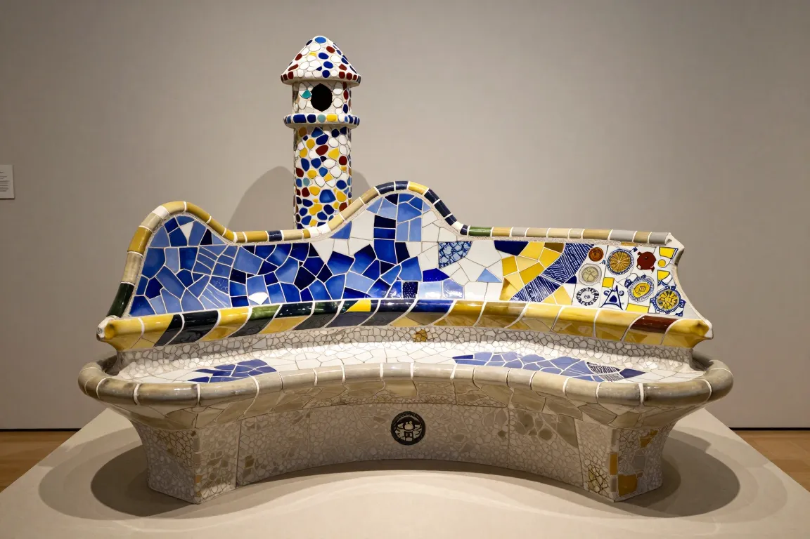

keramikk · 1900 to the present · også: Mosaikk av knust flis, Pique assiette på arkitektur, Skjærvemosaikk
En flate av knust flis og porselen som er satt i mørtel på en buet vegg, en benk eller et tak. Antoni Gaudí og Josep Maria Jujol gjorde den til en fri, fargerik hud på bygninger i Barcelona.

Kjerneidé
En knust flis er ikke avfall: en vegg av skår tar hvilken som helst kurve, og glasurfargen på hvert stykke smelter sammen til én lys flate.
Designprinsipper
Knus glaserte fliser og tallerkener med en hammer i biter på 2 til 10 cm.
Sett bitene i et leie av våt mørtel på en buet vegg, en benk eller en pipe.
Bland mange farger i ett felt; plasser bitene tilfeldig og hold mønsteret løst.
Ta med skår av tallerkener, flaskeglass og kopper, slik at noen få trykte motiver dukker opp.
La glasursiden vende utover; de skarpe kantene på skårene står under fugelinjen.
Fyll mellomrommene med en tynn mørtelfuge på 3 til 5 mm og tørk flaten ren.
Bruk mosaikken på en form med kurve: en slangeformet benk, en øgle, en kuppel eller en pipe.
Antimønstre
Et flatt rutenett av kvadratiske fliser i én farge